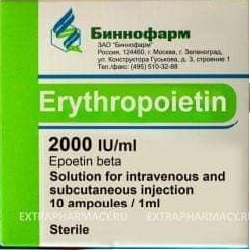

Erythropoietin

ကျောက်ကပ်မှထုတ်သော ဟော်မုန်းတစ်မျိုးဖြစ်ပါတယ်။ ရိုးတွင်းချဉ်ဆီမှသွေးနီဥထုတ်ခြင်းကိုအားပေးပါတယ်။
ဆေးအနေနှင့်ထုတ်လုပ်အသုံးပြုနိုင်ပါတယ်။ ထိုးဆေးအနေနှင့်ထုတ်လုပ်အသုံးပြုထားသောဆေးများရှိပါတယ်။ (Procrit injection)
ဘယ်မှာသုံးလဲ?
သွေးအားနည်းရောဂာ
အထူးသဖြင့်
- –ကျောက်ကပ်ဆိုင်ရာနာတာရှည်ဖြစ်နေသူများ
- HIVပိုးအတွက်ဆေးသောက်နေရသူများ
- ကင်ဆာဆေးသွင်းနေရသူများ
- –သွေးကျဲဆေးများသောက်နေရသူများခွဲစိတ်ကုသမှုတစ်ခုခုပြုလုပ်ရန်လိုအပ်သောအခါတွင် သွးသွင်းရခြင်းကိုလျော့ချစေနိုင်ရန် မခွဲစိတ်မီကြိုပေးလေ့ရှိပါတယ်။
- အကြောဆေးအနေနှင့်လည်းကောင်း၊အရေပြားအောက်ထိုးသွင်းပြီးသော်လည်းကောင်းသုံးနိုင်ပါတယ်။
- ဆရာဝန်ညွှန်ကြားချက်နှင့်သာသုံးနိုင်ပါတယ်။
ဘယ်လိုသုံးရမလဲ?
- များသောအားဖြင့် တစ်ပတ်လျက် ၁ကြိမ်မှ၃ကြိမ်အထိသုံးနိုင်ပါတယ်။
- –ဆေးပုလင်းကိုမလှုပ်ရပါ။ဆေူထိုးသည့်နေရာကိုပြောင်းလဲထိုးပေးခြင်းဖြင့် ခဏခဏအသုံးပြုရသူမျညးတွင် နာကျင်မှုသက်သာစေနိုင်ပါတယ်။
- –သွေူနီဥအရေအတွက်တိုးပွားလာရန်အချိန် ၂ပတ်မှ၆ပတ်ထိယူရပါတယ်။
- အခြေအနေတိုးတက်မှုနှင့်ဆေးထိရောက်မှုကိုစစ်ဆေးရန်သွေးစစ်မှုမျညးပြုလုပ်ရပါတယ်။
ဘေးထွက်ဆိုးကျိုးဘာတွေရှိလဲ?
- –ဆေးထိုးသည့်နေရာကနာကျင်ခြင်း
- –ခေါင်းကိုက်ခြင်း
- ကိုယ်ခန္ဓာနာကျင်ခြင်း
- –ချောင်းဆိုးခြင်း စတာတွေခံစားရနိုင်ပါတယ်။
အောက်ပါတို့တွေ့ရှိလျင်ဆရာဝန်နှင့်အမြန်ပြသရန်လိုအပ်ပါတယ်။
- –သွေးတိုးခြင်း
(သွေးနီဥများအရေအတွက်လျင်မြန်စွာတိုးပွားလာခြင်းကြောင့်ဖြစ်နိုင်ပါတယ်။)သွေးပေါင်ချိန်ကိုပုံမှန်တိုင်းပေးခြင်း၊သွေးနီဥအရေအတွက်စစ်ေဆေးခြင်းများဖြင့်သိနိုင်သည်။
- ပဋိဇီဝပစ္စည်းများထွက်လာခြင်းကြောင့် သွးအားနည်းခြင်းပိုမိုဆိုးရွားလာခြင်း
(အသုံးပြုမှုကြာလာလျင်တွေ့ရတတ်ပါတယ်။)
- အဖြစ်နည်းသော်လည်းအသက်အန္တရာယ်ထိခိုက်နိုင်သည့်သွေးခဲလွယ်ခြင်းကိုလည်းဂရုစိုက်စောင့်ကြည့်ရမည်။
- –ဆေးဓာတ်မတည့်ခြင်း(ယားယံခြင်း၊ရောင်ရမ်းခြင်း၊အင်ပြင်ထခြင်း၊)
ဘာတွေသတိထားရမလဲ?
- မိမိအသုံးပြုနေသောဆေးများနှင့်ခံစားနေရသောရောဂါများကိုဆရာဝန်ကိုပြောပြထားပါ။
- မိမိသဘောနှင့်အသုံးပြုနေလျင်၁၄ရက်ထက်မကြာရှည်စေပါနှင့်။ပုံမှန်မဟုတ်သောလက္ခဏာတစ်ခုခုခံစားရပါကဆရာဝန်နှင့်တိုင်ပင်ပါ။
- ကိုယ်ဝန်ဆောင်နှင့်နို့တိုက်မိခင်များတွင်ဤဆေးအသုံးပြုရန်အကြောင်းရင်းခိုင်လုံမှဆရာဝန်ညွှန်ကြားသည့်အတိုင်းအသုံးပြုပါ။
ဆေးအာနိသင်ဘယ်လိုရှိလဲ?
- မိမိအသုံးပြုနေသောဆေးများကိုဆရာဝန်ကိုပြေပြထားရပါမယ်။
ဆေးသောက်လွန်ရင်ဘာတွေဖြစ်မလဲ?
- ဆေးအရှိန်လွန်ပြီးအသက်ရှုကျပ်ခြင်း၊သတိမေ့ခြင်းတို့ဖြစ်ပါကအရေးပေါ်ကုသမှုလိုပါတယ်။
- ဆေးများကိုဘယ်ဆေးမဆို ဆရာဝန် သို့မဟုတ်တတ်ကျွမ်းနားလည်တဲ့ကျန်းမာရေးဝန်ထမ်းများရဲ့ညွှန်ကြားမှုနဲ့သာတိတိကျကျသောက်သင့်ပါတယ်။
- မိမိသဘောနဲ့ဆေးဖြတ်ခြင်းရပ်ခြင်းမပြုလုပ်သင့်ပါ။
- ဘေးထွက်ဆိုးကျိုးပြင်းထန်စွာခံစားရပါကဆရာဝန်နဲ့တိုင်ပင်ပါ။